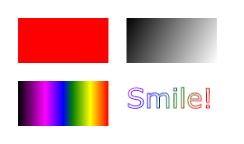
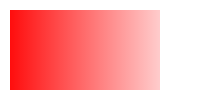

HTML5 Canvas
مهمتر عامل ایجاد گرافیک های html5، عنصر canvas است. این عنصر از جاوا اسکریپت برای ایجاد گرافیک های html5 کمک می گیرد و فقط هم شامل گرافیک ها می شود و هیچ محتوای دیگری در آن وجود ندارد. HTML5 Canvas دارای متد ها متنوعی برای ایجاد گرافیک های html5 است. به عکس زیر دقت کنید.
این گرافیک ها توسط html5 canvas طراحی شده اند و همانطور که مشاهده می کنید شامل عناصری مانند مستطیل قرمز، مستطیل گرادیان، مستطیل رنگی و متن رنگی است. در این جا سعی می کنیم با چند مثال کاربرد های این عنصر را برای ایجاد گرافیک های html5 را شرح دهیم.
سوالات HTML
سوال ۱۷:canvas برای چه استفاده می شود؟